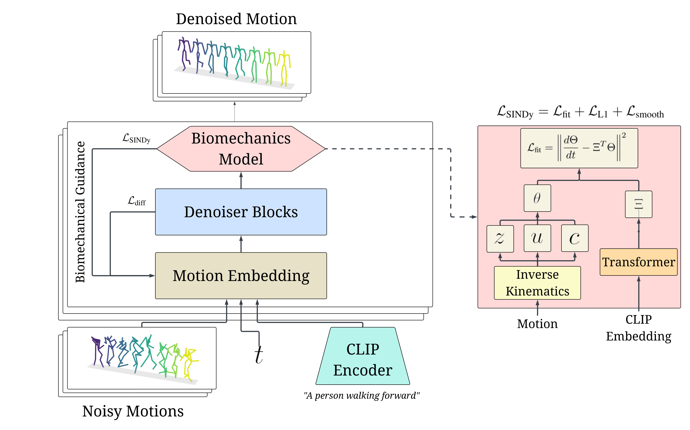

Projects
SINDyffuse
Text-conditioned human motion diffusion with sparse SINDy biomechanical models and OpenSim physics penalties.
- Trained on 14,000+ HumanML3D motion-text pairs, retargeted to Rajagopal musculoskeletal models, achieving 70% higher fidelity compared to state-of-the-art human motion models.
- Matched full physics-simulator-guided diffusion on biomechanical plausibility within 5% while running inference over 10× faster than online OpenSim guidance and within 15% of unguided baseline latency.

PG-BIG: Personalized Guidance for Biomechanically Informed GenAI
Biomechanically informed motion generation pipeline that personalizes motions of athletes given an action prompt using a conditioned VQ-VAE model, guided by clinician-defined constraints via the OpenSim library.
- Evaluated on 5,000+ trials from 183 athletes across 30 tasks; improved realism metrics by over 80% compared to state-of-the-art baselines.
- Achieved over 95% accuracy in classifying athlete generated-motion embeddings.